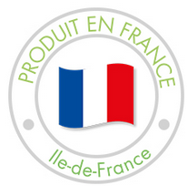
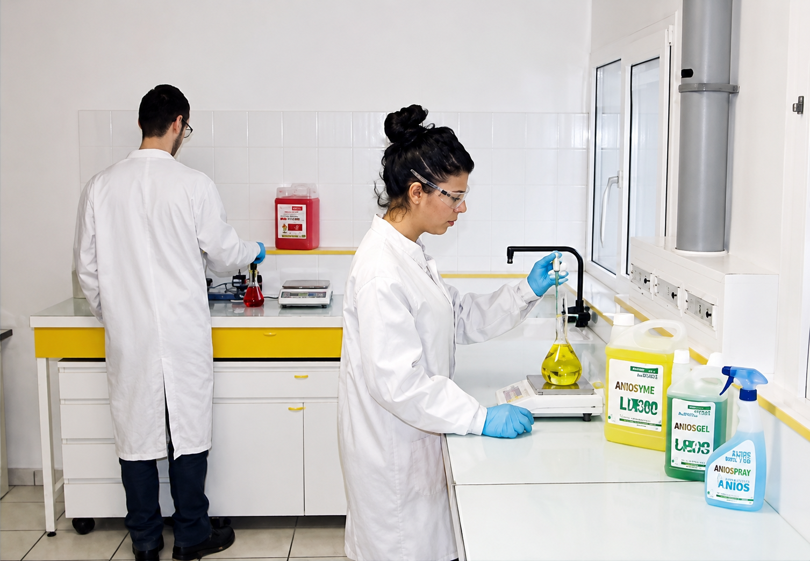
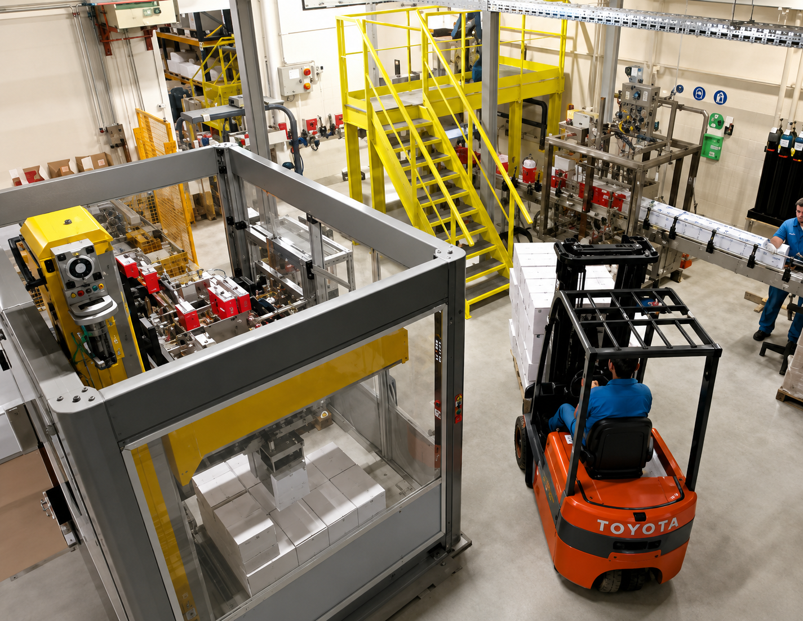

40 ans d'innovations… Pour la performance des produits Activert
- Depuis 1982, concepteur et fabricant de produits de nettoyage professionnels, la société RCSI s’est distinguée par une démarche de progrès privilégiant la qualité de ses produits et la satisfaction de ses clients.
- Soucieuse, depuis le début, de l’impact de ses produits sur l’environnement, une démarche de développement durable a été initiée par RCSI, producteur de la marque éco-responsable Activert et entreprise pionnière dans la mise place d’un système de management ISO 9001 et ISO 14001.

Un laboratoire du nettoyage écologique

- En veille permanente sur la réglementation et l’innovation technologique l’équipe du laboratoire assure la mise au point des produits en sélectionnant rigoureusement des ingrédients à incidence réduite pour les personnes et l’environnement, des tensio-actifs d’origine végétale, et des parfums sans allergènes.
- Une démarche d’éco-conception permet de concevoir des produits plus concentrés qui consomment moins de ressources tout en économisant emballages et transports.
Qualité et production
- La fabrication et le conditionnement des produits est assurée par l’équipe de production selon les normes et labels les plus exigeants. La qualité des produits et la conformité aux exigences légales font l’objet d’audits externes réguliers.
- Le site de production fonctionne sur le principe du « zéro rejet liquide » et les déchets industriels sont recyclés à hauteur de 95%.
